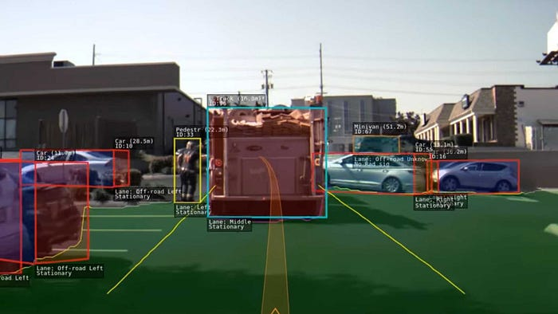

I'm currently working on a project focused on disparity mapping and 3D depth estimation using stereo vision systems. This involves calibrating stereo camera pairs, rectifying images, and using block matching algorithms to extract depth maps in real time. I'm exploring OpenCV for baseline implementation. This project has applications in robotics, autonomous navigation, and real-world 3D reconstruction. I have started my implementation with these cameras, because they are affordable on amazon. see on Amazon

I am trying different algorithms to achieve accurate disparity maps and depth estimation : StereoSBM, and StereoSGBM. My goal is to create an experimental setup that can be used for navigation and mapping tasks in autonomous drones and cars. I am using the Middlebury 2001 stereo dataset to setup a baseline algorithm.



These cameras suck becasue they have a lot of noise, which makes the SGBM and SBM algorithms struggle a lot with even slightly less than optimal conditions. I have to tune and calibrate the hell out of these cameras, and I even designed a 3D print to house them at a theoretically perfectly horizontally leveled position. So far, they are still a few pixels off, which seemingly still throws off the entire algorithm.
I am currently in the phase of stereo calibration of both cameras, to hopefully figure out the Intrinsic and Extrinsic parameters involved.

I am currently working on an autonomous drone that combines computer vision, path planning, and real-time control algorithms for autonomous navigation. The project focuses on creating a drone capable of navigating complex environments using the stereo vision system I'm working on, along with additional sensors for obstacle detection and localization. We have designed the majority of this drone from scratch, such as the flight controller, and the body. Components such as the motors and ESC are off-the-shelf. We have designed the entire body in Onshape and Autodesk inventor, and the PCB was made in KiCAD.

In our current stage of development, we have completed the flight controller, and have began assembling it with components such as the ESP32 for real-time sensor data collection, the Raspberry PI for processes such as computer vision and object avoidance, and sensors such as the MPU 9250, GPS and Barometer.
The drone project integrates multiple technologies including:
We are currently integrating all the components of the drone to begin PID tuning to hopefully get it off the ground. We are planning on using noise filtering algorithms such as the Kalman Filter to improve the accuracy of the sensors and to reduce vibration noise.